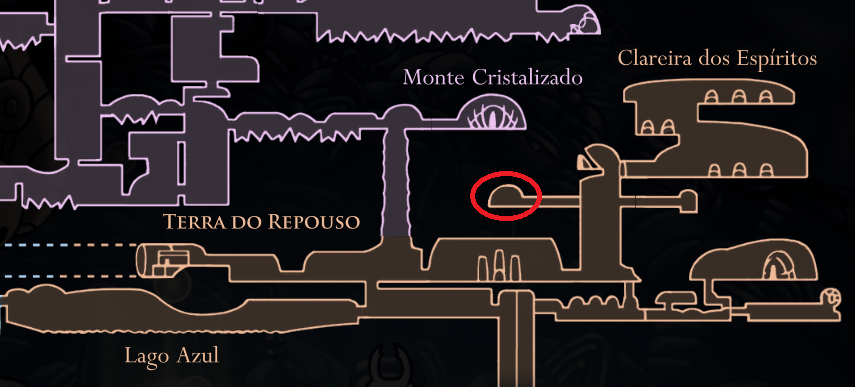

Amuleto defensivo outrora usado por uma tribo que poderia moldar sonhos. Conjura um escudo que segue o portador e tenta protege-lo.

Escudos Dos Sonhos
Vá até a Terra do Descanso, e entre uma área perto de uma Estação de
Besouro, caminhe um pouco para a esquerda e você acha o amuleto.
